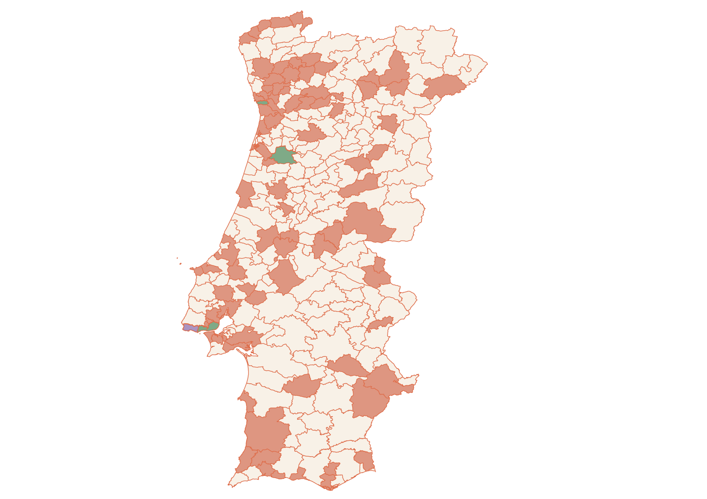

Mapeamento de transparência de dados

Município com Responsável de Acesso à Informação
Sem RAI e sem portal
Município com Portal de Dados Abertos e RAI
Município com Portal de Dados Abertos e sem RAI